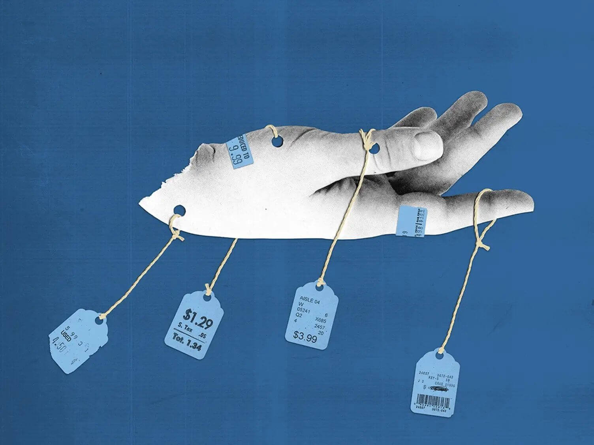
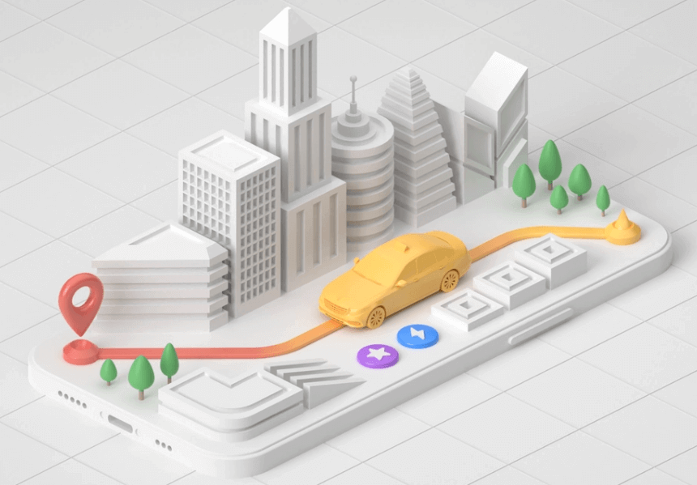

Crafted by Yu with ❤
Hi, I'm Yu!
Product Manager Scrum Master Product Owner Designer Coder Gadget freak Lifelong Learner
I'm a passionate, curious and experienced product manager. I have a strong interest in tools and AI-assisted process automation.

- Nice to meet you!
Yu Xiao
Product Manager - Problem Solver Detail Oriented Data Driven PerfectionistHello there! My name is Yu Xiao, a seasoned product manager with an 8-year tenure and a background in computer science, just finished my Master of machine learning at the Australian National University. I've honed my skills across sectors such as 2C, 2B, SaaS, and hardware, exhibiting proficiency in customer-centric product development and data-driven strategy.
My hands-on experience embraces the full cycle of internet product development, from inception to iterative enhancements. I've led a diverse range of products, notably online design editors and intelligent parking systems, demonstrating my interest and expertise in tool-based products.
As a rigorous logical thinker, I've successfully led a product & research team of 15 members, driving a significant increase in user engagement and retention. I'm also a Product Owner certified professional, proficient in leading agile projects from concept to reality.
Passionate about infusing AI into tool products, I'm eager to leverage my skills to foster growth and customer satisfaction in a fast-paced tech company.
-
8
Years of Experience -
Quadrupled
Active User Count -
25%
Increased revenue
Experiences
- Education-
Feb. 2021 - July 2023
Australian National University
Master
Machine Learning• GPA: Distinction (6/7)
-
Sep. 2007 - June 2011
Huazhong University of Science and Technology
Bachelor
Optoelectronic Information• Ranks 6th in mainland China
• GPA: 78.78/100
- Working Experience
-
2022.11 - 2023.02
Product Manager (Intern)
Mochi LabsCanberra
• Note: it's an intern job during summer vacation;
• Contribute to developing and organizing Business plans, product vision, Roadmaps, User Stories, Personas and more. My role involves streamlining product development processes and ensuring optimal user experience.
-
2020.07 - 2022.07
Product Manager
iSheji.comBeijing
• Led cross-functional team in the reconstruction of the editor, effectively communicating with stakeholders to balance the needs of both consumer and business users;
• Redesigned textbox and image features, generating a 30% increase in template usage;
• Led the SDK program for key account customers, resulting in a 25% increase in customer satisfaction.
-
2018.06 - 2019.09
Product Lead - Web
chuangkit.comBeijing
• Coordinated the entire web-side product architecture and Increased active user count fourfold during the working period;
• Led the transition of business model to "Subscription + content consumption", increasing revenue by 15%;
• Optimized editor experience and module functions with user-centric design, reducing user churn rate by 20% and increasing NPS score to 78;
• Launched artistic text effects and GIF image generation, achieving 150,000 hits in the first week.
-
2015.08 - 2018.04
Product Director
Sinosteel City Dev. Ltd.Beijing
• Participated in the development of "Qingpark" intelligent parking platform from scratch;
• Managed R&D department (14 people) and project progress;
• Collaborated with sales and operation teams during the bidding and project implementation of more than 20 smart car parks, using strong communication and negotiation skills to ensure successful project execution, generating 10,000 parking bills per day.
-
2013.06 - 2015.07
Product Manager
Dr. Peng Group ltd.Beijing
• Oversaw commercial router cloud management, including business information, portal page content, and membership system, increasing business information accuracy by 15%;
• Conducted training sessions for sales and support teams on the usage and features of the commercial routers' cloud management system, ensuring clear communication and understanding of the product.
-
2012.03 - 2013.05
Product Assistant
Hongtu Wuhan ltd.Wuhan
• Optimized cloud platform sales process and user experience;
• Improved the "task/event" module to track daily sales team work, boosting team productivity by 15%.
- Skills
My Skills
-
Demonstrated success in developing product road maps, managing cross-functional teams, and ensuring on-time project completion;

-
Proficient in mining requirements scenarios, conducting user research, and producing comprehensive requirement documents;
-
Adept at using data analytics tools such as Tableau, Excel, and Google Analytics to drive product improvements and decision-making;
-
Experienced in creating high and low fidelity prototypes, iterating on designs, and optimizing user experience;
-
Skilled in facilitating Agile and Scrum methodologies, driving cross-functional collaboration, promoting continuous improvement, and ensuring timely delivery of high-quality, value-driven products. (with PSM & PSPO Certification)
-

Solid background in computer science and machine learning, experienced in Python, SQL and Java programming languages. Familiar with OpenAI api, Langchain, Stable Diffusion and related applications.
- Certifications & Languages
-
Chinese/Mandarin
• Native
-
English
• IELTS: 7 CEFR: C1 as of 2020
-
• Issued on 19 June 2023
-
• Issued on 14 June 2023
- Softwares & Tools
Proficient in:


- Portfolio
Product-Relevant Works
I'm passionate about my work, feel free to click them to see more details.
Updating...
-
 Product Architecture
Product ArchitectureCase: Online Design Editor (2019)
Tool: Figma*Note: it's a link to the Figma file.
• A overall product structure for the reconstruction of an online editor.
• The document offers a comprehensive introduction to the editor's architecture and overall product direction, starting from its fundamental elements. The goal is to align product philosophies and directions across departments and roles, minimizing collaboration issues due to misunderstandings in product or technical aspects. It also helps technical colleagues grasp key features for better technical preparation and organization.
-
 Artificial Intelligence
Artificial IntelligencePersonal Project: Large Language Model-Driven Virtual World and Characters (2023-present)
Tools: PyCharm, Git, Python, ChatGPT, Vector DatabaseProject Address: Github project
• CyberNexus is a virtual world project, driven by the natural language processing and inference abilities of a large language model for character behavior and interaction;
• This project utilizes the ChatGPT API, prompt engineering, and embedding databases to provide characters with thinking and memory abilities;
• Users or characters in the game can communicate with other characters in the world; you can see how basic characters think and communicate to achieve goals in this chat record example.
Tools: PyCharm, Git, Python, ChatGPT, Vector Database
Project Background
CyberNexus is a virtual world project, aimed at driving characters in the world through large language model's natural language processing and limited inference abilities. Using OpenAI's ChatGPT API, prompt engineering, and embedding database, it grants characters thinking and memory skills.
Project Address
The project address is: CyberNexus.
You can try installing and running it yourself, or if you just want to see the effect, you can find some records we have debugged in this chat record example.
Goals and Purpose
Build self-driven robots, enabling real-time interaction between characters, fostering virtual community building, and enhancing the realism of interaction.
Product Features
・Ability to plan, interact, remember and reflect characters;
・Creation of characters, and corresponding bots;
・Characters' memory and introspection abilities;
・Interaction, chatting, etc., between two/multiple characters.
Overall Product Logic
If the image is too small, you can click on the image to view it in a new window.

Next Steps
The CyberNexus project has built a vibrant virtual world through a large language model; the next step is to further enhance characters' abilities, build a virtual community, and realize richer functions.
 Prototyping
PrototypingMulti-Platform Prototyping Cases (2014-2021)
Tools: Axure, Figma, Sketch• This presentation includes multiple show cases of prototyping for different platforms, which includes desktop, SaaS, mobile, web and so on.
• The choice between Hi-Fi and Low-Fi prototypes depends on the current stage of the product and the intended audience.
Tools: Axure, Figma, Sketch
Case 1: Content Management System Design (2021)
Product Type: Admin Panel
Platform: Desktop
Overall Structure and main process

CMS for photos management from scratch, it's a cross-functional platform for different departments and involves different processes of uploading or delivering photos.
Workflows


Organize complete and detailed workflows with colleagues from multiple departments.
Prototype
Use Axure to design and implement the prototype for the platform, which includes multiple modules and pages.

Case 2: File Management (2018)
Product Type: SaaS
Platform: Desktop
A simple demonstration of the file management feature for SaaS, done by Figma.

Case 3: Mobile Image Editor - WeChat Mini-Program (2018)
Product Type: WeChat Mini-Program
Platform: Mobile
The prototype of online image editor for WeChat platform, which includes features like Crop, Resize, Text, Drawing Tools, etc.

Case 4: Design Sharing (2020)
Product Type: Cross-platform Functionality
Platform: Desktop & App & WeChat Mini-Program
This is a relatively simple but complex feature, it is a cross-platform feature that involves complex permission checks.

 Data Analysis
Data AnalysisCase: Navigating Seasonal User Engagement Decline (2018)
Tools: Tableau, MySQL, Google Analytics• This case study explores a significant drop in user engagement during summer, revealing notable declines in secondary cities and among educational users.
• The summer vacation was identified as a key factor through data analysis and user interviews. Responsive strategies such as seasonal content, user retention programs, and a feedback mechanism were formulated.
Tools: Tableau, MySQL, Google Analytics
Background
In July and August, we observed an unexpected significant drop (more than 10%) in our active user base. Recognizing the potential implications, I was tasked to understand the reasons behind this decline and formulate responsive strategies.
Problem Identification
I initially tried to identify potential problems through direct communication with a group of regular users. However, these discussions with a dozen users did not pinpoint any definitive issues, which prompted a deeper data-driven analysis.
Data Analysis & Findings
By leveraging Google Analytics and our backend data, I carried out a comprehensive user persona analysis.

The analysis revealed two key observations:
- 1. The decrease in active users was most significant in secondary cities, with negligible changes in primary cities.
- 2. A substantial drop-off was noticed among our educational or campus users.
Insight & Hypothesis
These patterns led to the hypothesis that the summer vacation, typical in July and August, might be affecting our user engagement, particularly among educational users.
Validation
To validate this hypothesis, I conducted focused interviews with users from secondary cities and the educational sector. The responses corroborated the hypothesis, establishing summer vacation as the key driver for the drop-off in usage.
Solution & Strategy
Armed with these insights, we crafted a set of strategies to counter the impact of such seasonal variations:
- 1. Seasonal Content Strategy: Introduced seasonal themes and functionalities aimed at non-academic user engagement during summer months.
- 2. User Retention Programs: Launched targeted retention programs such as summer contests, rewards, and interactive events to keep users engaged even during vacation periods.
- 3. User Feedback Loop: Strengthened the feedback mechanism to understand user needs better and adapt our offerings accordingly.
Conclusion
By incorporating a mixed approach of user interaction, thorough data analysis, and focused user interviews, we not only understood the reasons behind the sudden drop in our active user base but also devised effective strategies to mitigate the impact.
 Competitor Analysis
Competitor AnalysisCase: Analysis of a CMS platform for Kindergarten (2022)
Tools: Figma, Mind Mapping*Note: it's a link to the Figma file.
• A initial analysis of a Knowledge/Content Management System.
• Leveraging extensive product usage, company financial, and industry insights, I summarized the product's architecture, design principles, user base, and revenue. Then offer recommendations for improving product architecture and module components.
 Data Managements
Data ManagementsCase: Data Management System for SaaS (2016)
Tools: Excel, Figma• The building process of the Data tracking, purifying, analysing and presentation system.
• Including: key metrics Identification, breaking down to basic data list, data flow design, data analysis, and finally, the data presentation.
Tools: Excel, Figma
Background
After the fundamental development of our product, we shifted our focus to meticulous operation and analysis of user behavior. Consequently, I was appointed to organize the basic data management system of the product.
Communication and Indicator Determination
Through cross-departmental communication, I have been able to identify the data indicators of primary concern to various stakeholders. This required a deep understanding of each department's operations and goals, as well as the ability to translate these into actionable data queries.
For example: In a project with the marketing team, I identified their need for data on customer acquisition cost, retention rate, and lifetime value. By defining these key metrics, I enabled the marketing team to measure the effectiveness of different strategies and campaigns.
Breakdown and Dissection of Data Indicators
I dissected each high-level metric into underlying base data, such as user behaviors and product performance. This process allowed for granular insights and better problem diagnosis.
For example: I broke down the customer acquisition cost into factors such as conversion rate, and number of new customers acquired. This provided the team with insights on which factor to optimize to lower the cost.
Event Tracking and Data Table Organization
Designing the infrastructure for data collection was a crucial task. I planned and implemented event tracking mechanisms that capture necessary data points in an organized and logical manner.

Design of Backend Data Presentation
I ensured that the processed data was presented in an easily understandable and actionable format. Using data visualization tools, I created dashboards that effectively represented data and highlighted key insights.
 Persona
PersonaCase: Personas for Kindergarten (2023)
Tools: Notion, Questionnaire• Personas for teachers of the Kindergarten.
• The research was done by collecting information from social media & forum, talk to my teacher friends, send them questionnaires, collecting their documents and daily schedules.
• This persona is intended for an early-stage product, so it is quite general in nature.
Tools: Notion, Questionnaire
Background
A persona of a teacher of Kindergarten.
This persona is intended for an early-stage product, so it is quite general in nature.
However, it's enough for the current user stories with huge details
Content

 Usability Testing
Usability TestingCase: Images Background Remover (2019)
Tools: Zoom, Keynote, TeamViewer• We conducted a usability test for our novel online image clipping tool. The test included tasks of varying difficulty levels and was analyzed post-completion.
• Key issues identified were the mismatch of expected user interaction, impatience during prolonged tasks, and difficulties in adjustment when the boundary was exceeded. Based on these insights, we improved function guidance, backend processing speed, and the positioning and logic of interactive controls.
Tools: Zoom, Keynote, TeamViewer
Background
After the completion of our core feature for image clipping, we ventured into creating an online image clipping tool. At that time, similar products were scarce on the market, leading to uncertainties about user acceptance and product understanding. Therefore, we decided to conduct usability testing with actual users.
Team and Responsibilities
Our usability testing was organized in collaboration with colleagues from User Operations and Design. I was responsible for designing the overall testing process, key data metrics, writing test questions/cases, and refining the interactive details with the design team. Colleagues from User Operations purposefully recruited 3 designer users and 3 general users from various industries.
Testing Task Instructions
I selected four images of ascending difficulty levels as tasks.
I assigned related process tasks like uploading & downloading image, adjust size of the brush, etc.
Task Instruction Sheet:

The entire process was video-recorded with minimal guidance from the operations team.
Post-Test Analysis
Following the test, we analyzed task completion status, time spent on tasks, and conducted a comparative analysis based on specific scoring.
Marks for the process tasks:

Findings
Our analysis revealed the following key insights:
- 1. Designers tend to handle tasks in a manner similar to Photoshop's mask operation, which did not align with our expected interaction.
- 2. User patience significantly diminished when the image clipping process took more than 3 minutes.
- 3. Users were unable to make perfect adjustments when their outlining exceeded the image's boundaries.
- 4. We were worrying about the acceptance of the opacity problem during the process, but the test result indicated fine.
- 5. ...

Actionable Adjustments
Based on the testing insights, we implemented the following improvements:
- 1. We provided stronger guidance for the feature: a must-watch video when user entered for the first time, and instructions placed right at the bottom
- 2. We enhanced the backend image clipping processing efficiency to reduce the image clipping time.
- 3. We adjusted the position and logic of the interactive controls.
- 4. ...
Conclusion
Through continuous iterations and improvements, we strived to provide our users with a more efficient and intuitive online image clipping tool.
Artificial IntelligencePersonal Project: Local Database-Driven Large Language Model Agent (2023)
Tools: VSCode, Git, Python*Note: it's a link to the Github project.
• This project was developed with the aim to master the OpenAI's ChatGPT API, prompt engineering design, and understand embedding databases.
• I have created a task-driven Agent that processes local data in a granular manner and generates complex content. Using OpenAI's function call API and Langchain's language model, I have managed to implement prompt design in the standard ReAct format. The aspects yet to be improved include the implementation of "Tree of Thoughts" to handle complex issues, auto-generation of prompts, addressing timeout issues, and expanding the tool library. The project is based on OpenAI, Langchain, and utilizes the Chromadb local database.
 Other Work-related or Daily Docs
Other Work-related or Daily DocsOther Work-related or Daily Docs
Tools: Obsidian, OmniGraffle, Axure, OmniPlan, Office• Note that docs are mostly written in Chinese and for showcase only.
• For more details, feel free to contact me.
Tools: Obsidian, OmniGraffle, Axure, OmniPlan, OfficeNote that docs are mostly written in Chinese and for showcase only.
For more details, feel free contact me.
Big little details

I'm quite into details of the products and love to try new products, and I collect every good detail from various products.
I've collected these for years, now I manage them with the help of Obsidian.
Workflow and Sequence Diagram

Workflow and Sequence Diagram for register a parking lot and paying parking fees
Drawn with OmniGraffle.
Project Management

Project Plan using OmniPlan and track tasks using the Excel.
Old fashioned and nowadays we have much better online Kanban like trello to track project status.
- ThoughtsSome Relevant Opinions
-

 July 16, 2020
Click to view the Original Post, in Chinese
July 16, 2020
Click to view the Original Post, in Chinese* Cover image sourced from Dribbble
This article is a requirements summary for B-end product design that was written while I was working at my previous job last year. At that time, I was solely focused on the editor's experience and had no interest in B-end requirements. After discussing some key requirements with the technical team, I realized that the preparation and workload required during the early stages were quite extensive. Moreover, the core editing functions could not yet support the top-level B-end requirements. Therefore, I did not prioritize this as the main direction for advancement.
Now that a year has passed, I realize that the fundamental logic has not changed, and the core is still centered around the management of the "design process". Therefore, I decided to publish this requirement summary to hold myself accountable. Note that some of the content may have changed since then.
Common Problems with Traditional Design Tools
Management through the file system. The management is focused on the result, rather than the process (root cause).
Communication requires sending raw files or exporting the final results (images/videos), which is time-consuming and results in a poor user experience.
Version management is done through files and customized version numbers, leading to disorganized management.
Long feedback cycles between users and designers. Written emails or oral descriptions are often abstract and difficult to understand. The design process is tedious and not intuitive.
Complex designs often require repeated adjustments and modifications, resulting in multiple iterations. Especially when working across departments or companies, communication issues often lead to unsatisfactory or compromised results in email exchanges.
Adding, deleting, and synchronizing logo, standard colors, and commonly used materials between teams.
Lack of design resources, and scattered designs stored in various places on the computer (can be classified as the same problem as 5).
Online Team Design Tools
Like product cycle management, the tool should manage the entire design cycle. Design requirements -> Production -> Verification -> Adjustment -> (Verification -> Adjustment) * n -> Output Content.
The goal of online design tools is to solve the "verification -> adjustment" process.
Advantages of Online Tools
Readability:
The designs are stored in the cloud, allowing for easy access and viewing on smartphones or computers without additional software. The experience for non-designers is excellent.
Real-time feedback:
All modifications made to a design are reflected in real-time. Apart from the designer, everyone else, such as colleagues assisting with the editing process, bosses reviewing the results, should be seeing the latest updates within seconds after modifications were made.
Even the first party can play the role of a cloud supervisor.
Interactivity:
Adjustments to the design are highly detailed, and every adjustment requires coordination and communication. Direct editing, commenting, chatting, voice chat, and other forms of online communication are all available.
Third-party solutions can be leveraged or empowered by other relevant products.
Digital Asset Management:
Design assets can be archived and classified in detail. Search can be performed based on various attributes such as time, popularity, type, scene, label, folder, etc.
Digital Copyright Content:
Some design tools provide design templates or copyright-related paid content. Integrated into the design tool, it is more convenient to use.
Design content accumulation:
The system automatically analyzes or allows users to gradually accumulate the team's design resources. For example, brand colors, color palettes, layout styles, commonly used materials, commonly used templates, etc.
Functional Requirements for Online Design Tools
- Import and export of existing digital assets: B-end design files such as PSD, AI, Sketch, etc., need to be imported into the design tool. Moreover, since most design tool functionalities cannot completely replace PS, AI, etc., the import and export of PSD and AI files is also important;
- Core functions: Online design tools need to meet most design needs to ensure usability.
- Collaboration: Includes multiple people collaborating in real-time, communication, sharing collaboration chains, etc.;
- Permission and personnel management: Editor permissions, design permissions, digital asset permissions, functional permissions, etc.;
- Digital asset management: Apart from permissions, flexible content management and content accumulation are the key points to ensure the stickiness of the product. This involves not only storing and categorizing the design files, but also analyzing and summarizing the design content.
For example, the system can automatically analyze and organize design resources such as brand colors, color palettes, layout styles, common materials, and templates used by the team. This can be done based on various properties such as time, popularity, type, scene, tag, folder, and more.
In addition, some design tools also provide copyrighted content, design templates, or other related paid content that can be integrated into the design tool itself for more convenient use.
Personal vs. Team
Personal and team are a one-to-many relationship. However, in most small business scenarios, personal and team are actually a one-to-one relationship.
Because we need to accumulate and manage content, we need to correctly place personal designs under the corresponding team. From this perspective, each design needs to belong to a team.
Simply put:
Team -> Project (if any) -> Design
Therefore, from my point of view, the organizational structure of documents in Shimo is chaotic. (But from the perspective of product evolution, it can also be understood.)
A Completely Different Business Model and Chain
Online team design tools rely not only on the product itself but also on the product experience management during the design process.
The latter is particularly important for the B-side as it is a crucial closed loop.
Not a Summary of Summary
The core of team design tools is oriented towards the design process and tries to solve it through real-time collaboration and online communication.
To reiterate, the core is actually "team" and "design," and everything else is secondary. While team materials, members/permissions, and brand are important, they are just bonus points.
As a B-side product, we can also solve problems after the design is completed. Although accumulation is not a good habit for most teams, if it can be well resolved, it can also be a good way to increase user stickiness.
-

September 1, 2020
Click to view the Original Post, in Chinese
* Cover image sourced from Dribbble
Pricing strategies
Currently, online tools' pricing strategies are very similar: subscription-based, monthly or yearly.
This logic is clear since servers and team maintenance require funding.
The subscription-based model works well for consumer (C) products, but in the business-to-business (B2B) market, it presents some problems, especially when it comes to collaboration.
Advantages of online tools
The core of collaboration tools is to incorporate as many internal workflows and team members as possible. In my opinion, this is one of the evaluation standards for B2B tools, to judge and expand the product's boundaries.
For example, student A needs to create a graphic.
Traditional workflow
The traditional workflow involves creating the graphic in Photoshop, exporting it, sending it to student B, and repeating this process several times.
Online workflow
In the new online collaboration process, student A creates the graphic on the collaboration tool and shares it with student B via a link or within the platform. Student B marks the changes or makes them directly, and they both adjust the graphic together.
The entire process is completed within the tool, eliminating the need for exporting files, reviewing feedback, local version control, and aligning versions between both parties.
This experience is much better than the traditional process, and the more processes and people the tool can include, the better the team's experience.
Real-world problems
For example, in the brief graphic design process mentioned earlier, two roles are involved: designer A and reviewer B.
A needs to be involved in the entire design process, while B may only review the work after A completes it. A may have five days to participate, while B may only spend half a day reviewing it.
From a time perspective, A's account is being fully utilized, while B's account is idle most of the time.
Most platforms charge for accounts or seats, and teams have to pay for both accounts. In this case, the B account is relatively less cost-effective, and teams will struggle with whether to spend money on it, which contradicts the original intention of including as many people and processes as possible.
For example, the staffing ratio for a basic product development team in a startup may be one designer, one product manager, two front-end developers, and two back-end developers. For design tools, at least three positions, including the designer, product manager, and front-end developer, should be included, but only one person, the designer, heavily uses it. Does the team need to purchase four seats for one person? Three-quarters of the accounts are idle most of the time.
"It's impossible. Let's use Sketch or Photoshop instead."
Figma's pricing by role
Therefore, pricing different seats based on roles or functions is a good choice.
Figma divides its users into two roles based on their ability to edit. Regular users are free, and editors are charged.
This is a good strategy. Figma can include all members of the team in the platform as much as possible.
Designers, product managers, front-end and back-end developers can all participate in Figma's platform and develop a habit of using it. As the team's daily work expands, the platform may also include the CEO, adjacent teams, and softwares (after all, viewing is free).Plus: Handling other teams or softwares joining the business process
PS2: Figma's "product prototype tool" is based on its ability to attract many product managers to the platform.
Dynamic seats
In the past few days, I've started to review collaboration-related content and have repeatedly come across the term "serverless" while studying CRDT. By the way, AWS's lambda has been online for several years now.
I realized that pricing based on demand and usage, like electricity and water bills, is a meaningful technology for tool products. If pricing could be based on a daily or hourly basis, even at a higher unit price, most teams could accept it as a temporary seat.
The significance of dynamic seats in a product is not only to save costs for small and medium-sized teams but also to encourage as many people and processes as possible to move to the platform.
The product form of dynamic seats can take many forms: unassigned seats, seats that open and close as needed, and seats that automatically charge based on usage, among others. We can discuss this further in the future.
Conclusion
- The core of collaboration tools is to incorporate as many internal workflows and team members as possible.
- Pricing based on editing seats presents barriers for roles that require less editing.
- More flexible and dynamic pricing strategies are needed.
In summary, B2B online collaboration products need to address the challenge of including as many people and processes as possible while providing a pricing model that is flexible, dynamic, and cost-effective for teams.
-

Click to view the Original Post, in Chinese
* Cover image sourced from Dribbble
0. Background
Back in 2015, when mobile payments were just beginning to take off, Didi was gaining momentum, and Ofo and Mobike were booming. We believed that parking lots would be a segment for traffic entry and that there weren't many players in the industry, so we entered the market with a proletarian mentality to transform and upgrade the industry.
The business itself was not difficult to understand. It relied on platforms to connect offline parking lots with online users. The first thing we needed to do was to solve the problem of connecting parking lots to the online world. This was done through license plate recognition using OCR, where license plates were used as user identifiers, and basic data such as parking orders were synchronized online.
We built a parking platform to connect and communicate between parking lot operators and vehicle owners, and improved the parking experience through intelligent and informational parking equipment upgrades.
The business model was also straightforward: empower parking lot operators in exchange for user traffic to drive subsequent operations. Typical applications included online searches for parking lots, payment of parking fees, monthly subscription users, and more.
We tried many ways to accomplish this, mainly focusing on two aspects: social parking lots and government-owned on-street parking.
First, let's talk about social parking lots, also known as enclosed parking lots or off-street parking lots.
(An off-street parking lot is fenced and has a toll booth, usually operated by a real estate/property management company or a specialized parking management company; parking spaces on the street are considered on-street parking lots, and all property rights belong to the government.)
1. Social Parking Lots in 2016
1.1 Parking Lot Needs
Owners: Money. Management team: Convenience. Attendants: Not too complicated.
1.1.1 Can We Meet These Needs?
Yes, but it's not very noticeable for owners.
There are several reasons for this: 1. There are relatively few cases on the market, so people are reluctant to try new things; 2. Inertia, the management structure of parking lots is already relatively stable, and people don't want to fuss with it; 3. There will not be too much additional income in the short term.
It's not just the owners who are reluctant to change; internal conflicts over profit sharing can also be a barrier.
1.1.2 Our Empowerment
a. Online Management of Business Operations: It mainly includes three parts: parking lot operating status, vehicle management, and toll team management. After the transformation, every order can be viewed online, including entry and exit time, license plate, photos, etc. Fixed vehicles can be directly registered on the online platform, and toll team's charging records are fully transparent. This blocks two types of revenue loss: 1. Loss of fees caused by allowing vehicles to pass freely offline; 2. Parking fees embezzled by toll collectors (for well-managed parking lots, I estimate that this fee ratio is about 5%, but with a daily revenue of 10,000, it can actually increase revenue by 150,000 to 200,000 per year).
b. Improved Entry and Exit Efficiency: License plate is equivalent to identity, no need to issue cards or manually record, eliminating additional interaction processes between car owners or toll collectors, improving entry and exit time, especially during peak periods. The exit time for general vehicles is about 22 seconds, and for temporary parking, it is about 16 seconds after installing the equipment, and for fixed vehicles or our users, it is about 3 seconds. This means that the peak value of one hour can be increased by at least 220 vehicles from 160. After the number of our users increases, the improvement will be more significant, and it can significantly reduce labor costs. (Actually, most of the time, it will not operate at full capacity, and the amount of money that can be saved is limited.)
c. Ability to Make Online Payments: Actually, this should be summarized into the intelligence of the parking lot, but the reason for mentioning it separately is that online payment for parking has become part of the routine cashless travel. (There was not such a strong demand in 2015-2016.) When I was observing at a toll booth in Hohhot, I could see that almost 30% (4 days, 9 pm to midnight, 23 out of 78 users) of the users actively asked if they could pay with WeChat (not a single one asked about Alipay).
d. Others: Including reducing the requirements for the quality of toll collectors, improving the image of the parking lot, etc.
1.2 Users in the Social Parking Lot Scene
1.2.1 Core User Needs
No matter where, the core need is to find a parking space quickly.
1.2.2 Can We Meet Them?
Frankly speaking, at the current stage, smart parking is not a revolutionary thing on the user side, because it can only provide an optimized parking experience, and does not solve the parking problem itself, and cannot guarantee that there will always be a parking space available for you. Or to imagine from a longer-term perspective, when you go to a restaurant, after getting off at the entrance of the restaurant, a self-driving private car still needs to drive a long way to the parking space we have arranged for it.
The essence of the problem is that parking spaces are actually scarce resources. There are nearly 6 million cars in Beijing, but less than 2 million parking spaces, a ratio of only 0.3, and the normal ratio should be 1.2. Moreover, the tidal phenomenon in the inner ring and core commercial areas is obvious, and it takes a long time to find a parking space.
Therefore, we cannot guarantee to solve this problem.
1.2.3 What Can We Do Then?
a. Tell users about the parking lot situation. Currently, how many parking spaces are available in the area/parking lot can be viewed, which plays a role in guiding or diverting; price-sensitive users can also filter parking lots.
b. Optimized parking experience. Our users do not need to park or get a card when entering, and can directly deduct fees online when exiting.
c. Customized operation services such as monthly parking.
d. Value-added services related to cars, such as local car washing and maintenance services. (In essence, it improves the added value of parking spaces.)
e. Other services related to cars.
/* C, D, and E require deep cooperation with parking lots.
1.2.4 Who Are Our Users?
In theory, anyone who parks is our user. Because we are doing infrastructure.
But the characteristics of core users are very clear, temporary users who park in the parking lot/area periodically.
They are our seed users, and we can see them by guarding the parking lot.
1.2.5 How Can We Quickly Acquire Users?
The fastest way to acquire users in the early stage is locally at the parking lot, which will be discussed later.
But if there is only offline promotion, it is a fantasy to get a large number of high-quality users. However, due to the small number of parking lots, it has not been possible to connect the dots to form a line, which has prevented online promotion, which is very regrettable.
If there is an opportunity to do this, besides the coupons that have already been played out, I hope to have the opportunity to operate some events or value-added services with some parking spaces.
Some interesting things that have been thought of include: 1. Membership level, special sound or effect on the display screen and voice when entering and exiting for different levels; 2. Help-seeking activities: get the right to use reserved parking spaces by asking friends to like and share; 3. Membership points, such as car washing, etc., also verifying the reliability of similar services inside the parking lot; 4. A mayor mechanism similar to Foursquare, with dedicated and eye-catching parking spaces…
1.4 Problems We Have Encountered
1.4.1 Technology
Software platform problems can be solved anytime, but hardware problems are very troublesome.
Especially the problem of recognition rate, license plate is the user's identity and the core connection between offline and online business.
The earliest OCR used photo recognition, which triggered taking a photo with a magnetic coil and then recognizing the license plate number. It claimed to have a recognition rate of 98%, but actually, it was only about 92-94% due to the influence of the recognition environment. This means that nearly 50 orders out of 500 vehicles entering and exiting will be incorrect. This is unacceptable.
In the mid-to-late 2016s, the supplier's technology was updated, and video image recognition was used, recognizing multiple frames of images at once and analyzing and comparing them, raising the rate to 98-99%, meaning that the number of wrong orders for 500 vehicles entering and exiting was reduced to about 10, and with manual intervention, it was basically acceptable.
There are also problems with processing unlicensed vehicles or vehicles with obscured license plates, and the current technical architecture cannot handle them well, and can only be gradually optimized.
1.4.2 Financial Problems
First and foremost is the equipment, which is expensive.
The cost of an entry and exit device with a moderate price is about 20,000 to 30,000, not including the cost of modifying the entry and exit. In 2015, most parking lots did not have the awareness to invest several thousand dollars in a system that "seems to have no use" for them. Therefore, giving them away in the early stage was a big problem for cash-strapped start-ups.
1.4.3 Diverse B-side Demands
Construction and debugging of parking lots locally. Parking lots have too many demands, and there are more historical legacy problems. The Chinese people solve problems with a balance and harmony, but this kind of state of dancing on the edge of a knife cannot be solved by the manpower of a startup company. For example, in a parking lot, fees are charged on the left-hand side of the parking lot, while there is no charge for parking in front of a certain restaurant on the right-hand side. Or the billing rules within the parking lot are not in line with common sense. One unresolved demand will result in an immediate phone call.
Some demands can be solved by software, but some demands can only be slowly dealt with by negotiating with the parking lot.
1.4.4 Cold Start
This is a problem that all O2O projects will encounter. Unlike the recommendation system, the solution for this LBS-specific O2O project is very clear, taking parking lots means taking users. The reason is also clear, the parking lot itself is a place where demand occurs.
The fastest way to acquire users in the early stage is locally at the parking lot, and in general, a parking lot with 500 parking spaces can bring less than one hundred active users in the first month.
2. Competitors
As mentioned earlier, we cannot solve the problem of quickly obtaining parking lots, and most competitors cannot either. In 2016-2017, a large number of new companies emerged in the parking industry, but only a few survived.
There are mainly two types of competitors:
- Property/real estate companies with their own parking lots, who are not worried about having no business;
- Companies that produce their own hardware and solutions, who can still do well by selling their solutions even without operating a platform.
For us, the second type of competitor is both an enemy and a friend, while the first type is a direct competitor.
My brief analysis of the first type in 2016 was:
- Their advantages: parking lot resources, which can be deeply exploited for customized parking services. They do not have to worry about their own parking lots and can prioritize the user side.
- Their disadvantages: the pace of their technical team may be slow, and other companies may have grievances and not cooperate with them on parking lots.
- Our opportunities: use the advantages of technology and team efficiency to obtain other parking lot resources, and strive to attract as many users as possible;
- Threats to us: After the competitor's product takes shape, they may use C-end users to "force" other parking lots to cooperate with them.
The results were actually a bit bleak, and the problem was on our side, so we won't discuss it further.
3. Government-run Roadside Parking Lots
All roadside parking lots are owned by the government. Therefore, when it comes to roadside parking lots, it is different from negotiating with social parking lots. We just need to negotiate with the government.
There are several advantages to negotiating with the government for roadside parking lots:
- They cover a wide range and there are parking spaces throughout the city.
We'll add more next time.